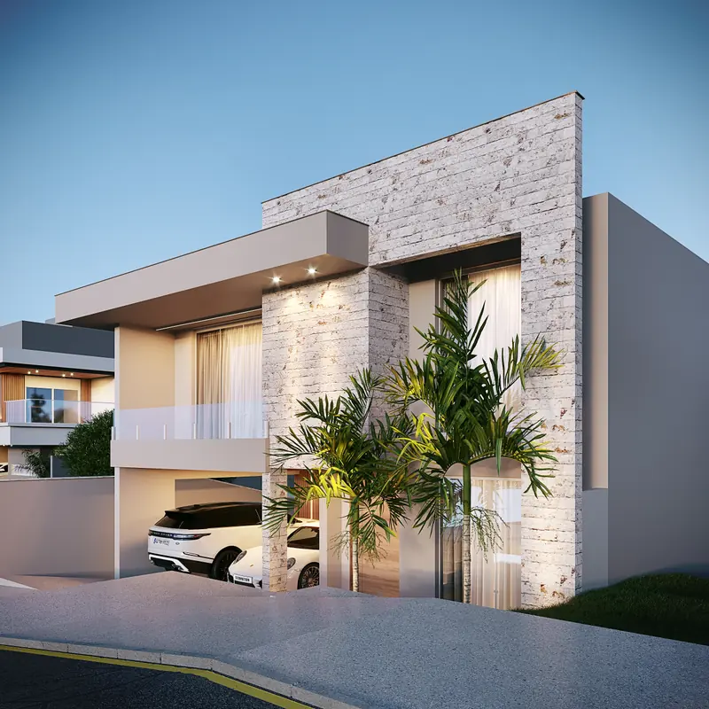
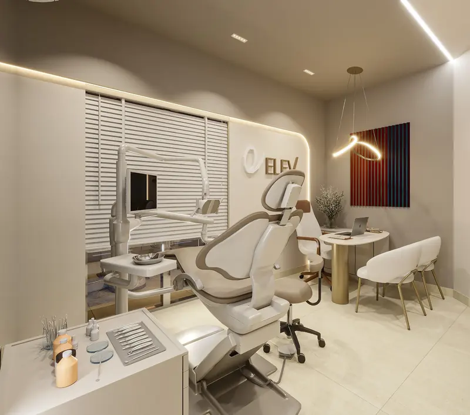
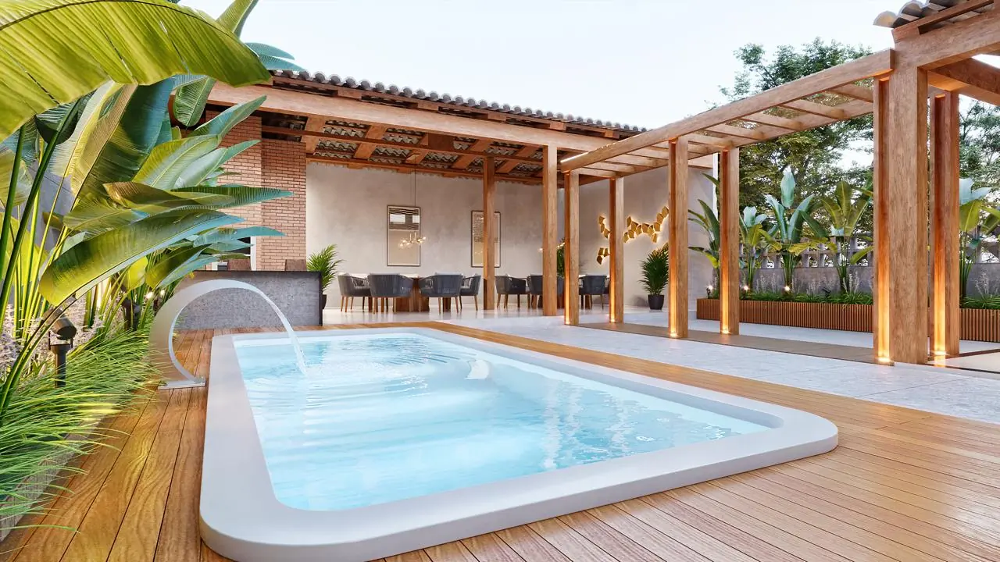

Excelente profissional, apaixonada pelo que faz. Traz muita riqueza de detalhes nos seus projetos e está sempre disponível quando precisamos.
Adriano T.Avaliação no Google
Arquitetura e interiores · Itabira, MG
Arquitetura e interiores para casas e empresas, com atendimento presencial em Itabira e região e online para todo o Brasil.
A arquiteta
Denise Mota é arquiteta e urbanista, formada pela Faculdade Santo Agostinho. Do escritório em Itabira, atende presencialmente na região e online em todo o território nacional.
Cada projeto começa por uma escuta atenta: entender o que é importante para a família, como ela usa a casa e o que quer sentir dentro dela. Dessa conversa nasce uma arquitetura sem fórmula pronta, que une estética, função e inovação em cada detalhe.
Antes da arquitetura, Denise tinha um cargo de destaque no setor financeiro. Quando o primeiro filho nasceu, deixou essa segurança para seguir o sonho de ser arquiteta e recomeçou em outra cidade, com um bebê de colo. Trabalho sério, honestidade e respeito por quem confia nela são os valores que trouxe dessa trajetória.
Na pesquisa popular espontânea do Top of Mind 2026, Denise Mota Arquitetura foi o nome mais lembrado na categoria Escritórios de Arquitetura, depois de dois anos seguidos entre os finalistas.
Esse prêmio carrega o meu nome, mas ele foi construído por muitas mãos e pela confiança de muitas pessoas.Denise MotaVer no Instagram
Empresas atendidas
Cada escolha no espaço de uma empresa comunica algo. Denise projeta lojas, clínicas, escritórios e fachadas pensando na experiência de quem chega e em como a marca aparece no ambiente: o letreiro, a luz, os materiais e o caminho da calçada ao balcão.


Fotos da obra e imagens em 3D publicadas no Instagram da Denise e das empresas. Na Pricyla Tomaz e na Italinda, a comunicação visual foi executada pela ArtPrint.
Serviços

Casa nova ou reforma. O desenho dos espaços, da fachada e da relação da casa com o terreno, pensado para a rotina de quem vai morar ali.
Ambientes completos: marcenaria, iluminação, revestimentos, cores e mobiliário, para cada cômodo ter a cara da família e funcionar no dia a dia.

Lojas, clínicas, escritórios e fachadas. Layout, iluminação, materiais e a marca aplicada no ambiente, pensados para a experiência do cliente e para a rotina de quem trabalha ali.
As reuniões acontecem no escritório, na Esplanada da Estação, e a Denise conhece de perto o terreno ou o imóvel antes de desenhar.
Quero um projeto presencialConversas por videochamada, medidas e fotos do espaço enviadas por você, e o projeto apresentado em imagens 3D para visualizar cada ambiente antes de executar.
Quero um projeto onlineVocê conta como vive, do que gosta e o que espera da casa. É aqui que o projeto começa de verdade.
A conversa vira uma proposta de distribuição dos espaços e de conceito, ajustada com você até fazer sentido.
Você vê os ambientes em imagens realistas, com materiais, luz e mobiliário, antes de qualquer obra.
Desenhos técnicos para quem vai executar, com a Denise por perto para as dúvidas do caminho.
Excelente profissional, apaixonada pelo que faz. Traz muita riqueza de detalhes nos seus projetos e está sempre disponível quando precisamos.
Denise Mota construiu um projeto para minha casa, avalio como excelente tanto a questão técnica quanto a forma de conhecer o perfil da família e transformar em projeto.
Minha experiência está sendo excelente. Muito detalhista, cuidadosa, a Denise está sempre disponível e sempre com um sorriso no rosto disposta a ajudar.
Entregar seus sonhos na mão de uma profissional, e ter um retorno muito além do que você imaginava, não tem preço, top demais essa cozinha.
Simplesmente faz mais que o combinado, impressionante a dedicação durante todo processo, só tenho a agradecer por tudo, super indico!
Excelente profissional. Ficamos muito satisfeitos com os projetos que Denise fez. Recomendamos pela competência e experiência.
Denise Mota é uma profissional extremamente cuidadosa, profissional e de extremo bom gosto. É também bastante acessível na discussão do projeto em todas as suas etapas.
Vamos fazer todos os projetos com você! Estamos encantados com seu trabalho e dedicação.
Pode. Além do atendimento presencial em Itabira e região, a Denise faz projetos online para todo o Brasil: as conversas são por videochamada, você envia as medidas e as fotos do espaço, e o projeto chega em imagens 3D para você ver cada ambiente antes de executar.
Os dois. Ela projeta casas novas e também trabalha sobre o que já existe: reforma de ambientes, ampliação e fachada nova. Nesta página estão a ampliação de uma casa que manteve a identidade da construção original e o antes e depois da fachada da Italinda.
Sim. Os ambientes são apresentados em imagens 3D realistas, com materiais, luz e mobiliário, e ajustados com você antes de qualquer execução. As imagens do portfólio acima foram feitas assim.
Pelo WhatsApp. Conte em poucas linhas o que você quer fazer (construir, reformar ou repensar os ambientes), a cidade e o tamanho aproximado do espaço. O valor depende do tipo e do tamanho de cada projeto, por isso a proposta vem depois dessa primeira conversa.
Pedir orçamento no WhatsApp
Conte em poucas palavras o que você tem em mente: construir, reformar ou repensar os ambientes. A primeira conversa é pelo WhatsApp.
Chamar no WhatsApp